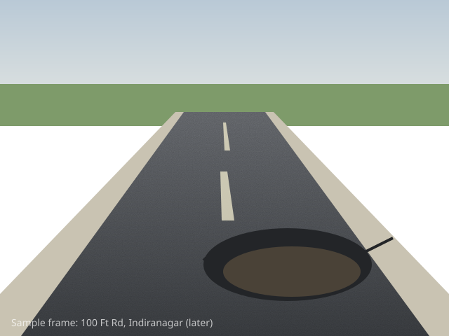

To: Assistant Executive Engineer, BBMP Road Infrastructure

Pothole PH-0006 on 100 Feet Road, Indiranagar. Risk: Critical (81/100). First reported 3 weeks ago, worsening.
Sample data. The live version is generated by /api/defects/{id}/complaint.